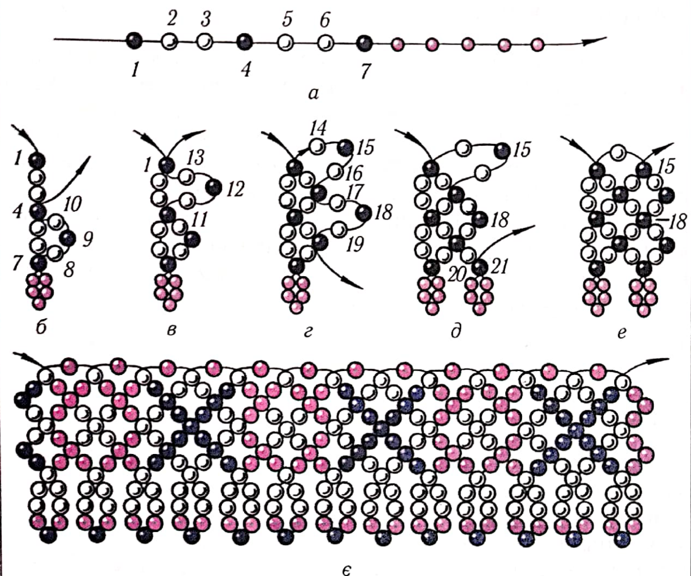
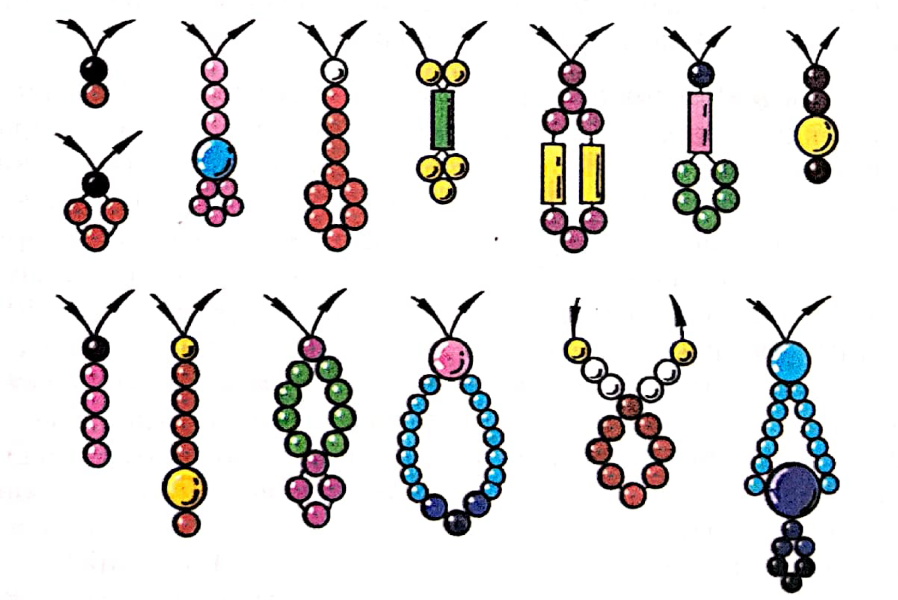
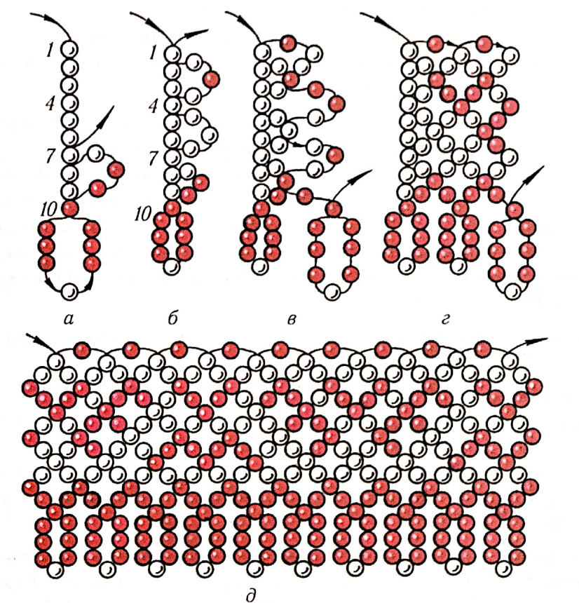
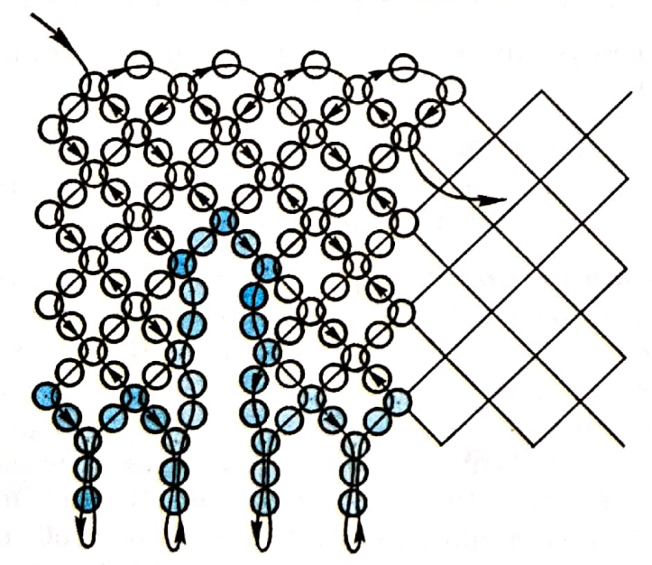
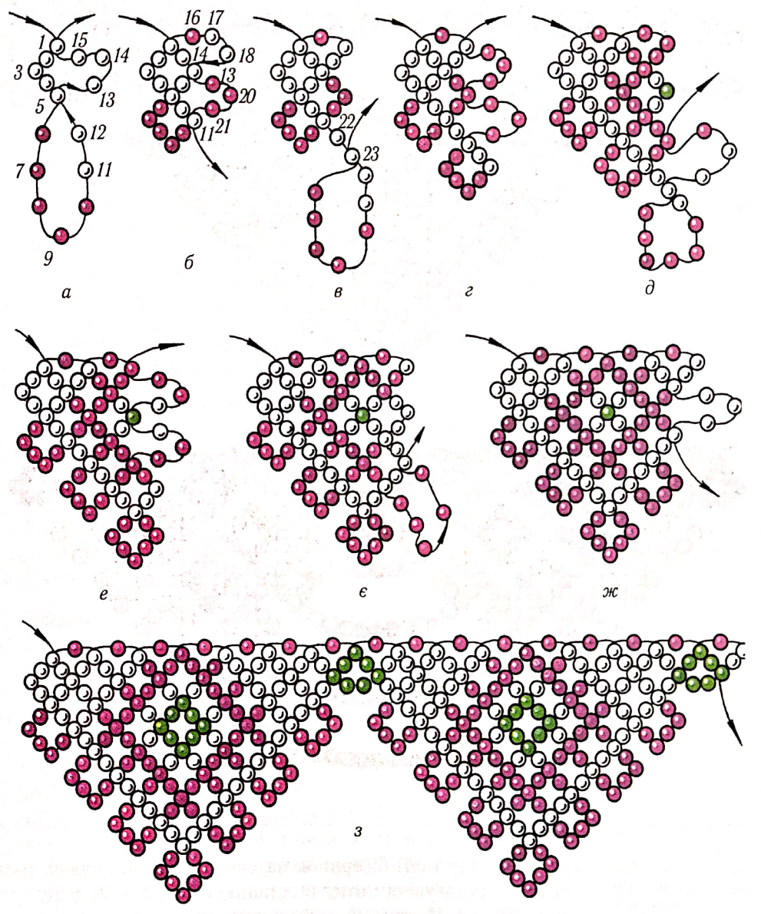

ЛАБОРАТОРНО-ПРАКТИЧНА РОБОТА
Тема: «Ажурні комірці»
Мета: засвоєння техніки нанизування ажурних комірців, виховувати естетичний смак, увагу, повагу та любов до традицій українського народу.
Матеріали та інструменти: бісер різного розміру та кольору, капронові нитки, голки для бісеру.
Порядок виконання роботи:
- Ознайомитись з теоретичними відомостями роботи.
- Виконати завдання практичної роботи.
Теоретичні відомості:
До шийних прикрас належать і комірці-вироби у вигляді ажурної сітки різних ширини і форми. Нанизували їх із крупного й дрібного бісеру, однобарвного й різнокольорового, стеклярусу й дрібного намиста, а в давнину-з річкових і морських перлів. Робили їх вузькими (в 1-2 вічка) й широкими (у 10-20 вічок) і називали в кожній місцевості по-різному: ошийник, борода, підгорлок, горлячка, сітка, мереживо, опліччя тощо. Назви ці походять від місця в одязі (шия, горло, плечі), способів виготовлення (сітка) і подібності до інших предметів (борода, манжет).
Техніка виготовлення комірців подібна до нанизування ажурних ланцюжків з тією лише різницею, що зверху виріб рівний, а знизу трохи розширений і прикрашений підвісками-торочками або петлями з бісеру, намиста, стеклярусу.
Нанизують комірці однією ниткою або з голками на кінцях, зліва направо, зверху вниз (непарні ряди) і знизу вгору (парні). Ця техніка нагадує в’язання повітряних петель гачком. Ширина виробу залежить від кількості вічок (ромбів) у вертикальному ряду. Від ширини комірця залежить і візерунок із різнокольорового бісеру.
Комірець різної ширини і різних узорів із зубчастими краями називають зубкомі нанизують на одну нитку. Процес виготовлення складніший і потребує уваги.
Практична робота
Виконати вправи:
1. Комірець у два ромби(мал. 16) виконують так. Для першого ряду набирають на нитку сім бісеринок 1-7 при стороні ромба у три бісеринки і якусь непарну кількість бісеринок на підвіску (мал. 16, а). Голку з ниткою протягують крізь останню бісеринку 7 ряду й притягують нитку. Набирають другий ряд із двох петель по три бісеринки (нижуть його знизу вгору). Для першої петлі набирають три бісеринки 8, 9 і 10,протягують нитку крізь бісеринку-зв’язку 4 першого ряду і притягують нитку (мал. 16, б).Потім набирають другу петлю з трьох бісеринок 11-13 і протягують нитку крізь бісеринку 1 першого ряду (мал. 16, в). Закінчують другий ряд, притягуючи робочу нитку, і набирають першу петлю третього ряду 14-16. Нижуть його зверху вниз, протягуючи голку з ниткою крізь середню бісеринку 12 на другій (останній) петлі другого ряду. Потім набирають другу петлю третього ряду17-19 і протягують нитку крізь середню бісеринку 9 першої петлі другого ряду (мал. 16, г).Притягують робочу нитку і закінчують третій ряд двома бісеринками 20 і 21 з підвіскою-висулькою (мал. 16, д).
Четвертий ряд нижуть знизу вгору, як і другий, з двох петельок по три бісеринки, протягуючи робочу нитку крізь середні бісеринки-зв’язки попереднього ряду (мал. 16, е).П’ятий ряд нижуть, як третій, шостий-як другий і четвертий (мал. 16, є).Так працюють до потрібної довжини виробу, не забуваючи, що в кінці кожного непарного ряду на нитку набирають тільки дві бісеринки та якусь кількість на висульку.

Мал. 16. Комірець у два ромби.

Мал. 17. Форми підвісок для комірців.
Підвіски-висульки для виробів можуть бути різної форми (мал. 17).
Закінчивши роботу, акуратно закріплюють кінець нитки, пришивають застібку або роблять шнурок-зав’язку. Якщо виготовляють комірець із дрібного бісеру, то збільшують кількість бісеринок для сторін ромбів із трьох до п’яти-дев’яти.
Все це підкаже вам набутий досвід, власна фантазія та вивчення стародавніх зразків.
2. Для комірця у три ромби (мал. 18) набирають десять бісеринок 1-10на перший ряд та підвіску (мал. 18, а).Продовжують роботу у такій самій послідовності (мал. 18, б-г), складаючи узор із кольорового бісеру (мал. 18, д).

Мал. 18. Комірці у три ромби.

Мал. 19. Комірці з розрізами.
За таким самим принципом виготовляють комірці з розрізами (мал. 19).
3. 3убок у п’ять ромбів(мал. 20) виконують так: на робочу нитку набирають 1-12 дванадцять бісеринок: 1-5 для першого ряду і 6-12для висульки. Протягують голку в бісеринку 5 і набирають другий ряд із трьох бісеринок13-15, протягуючи нитку крізь бісеринку 1 першого ряду (мал. 20, а).Третій ряд набирають із двох петельок по три бісеринки 16-18 і 19-21. Нижуть згори вниз, протягуючи нитку крізь бісеринки-зв’язки 14 і 11 (мал. 20, б). Притягують нитку і набирають дві бісеринки 22 і 23 для закінчення третього ряду і сім бісеринок на висульку. Закінчують третій ряд, протягуючи нитку в останню бісеринку 23 ряду(мал. 20, в).Четвертий ряд нижуть знизу вгору з двох петельок по три бісеринки, протягуючи нитку в намистинки-зв’язки попереднього ряду (мал. 20, г).У такій самій послідовності нанизують п’ятий і шостий ряди – середину зубця(мал. 20, д, е).Сьомий ряд нижуть зверху вниз з трьох петельок і починають, восьмий ряд із п’яти:бісеринок на підвіску. Голку з ниткою протягують крізь останню бісеринку-зв’язку сьомого ряду з низу вгopy (мал. 20, є).Закінчують восьмий ряд двома петельками. Так нижуть дев’ятий-дванадцятий ряди (мал. 20, ж).Зубці з’єднують ланцюжком у півромба і нанизують другий зубок у такій самій послідовності, як і перший (мал. 20 , з).

Мал. 20. Комірець зубок у п’ять ромбів.
Контрольні питання:
- 1. Як надають овальну форму комірцям?
- 2. Як називають комірець із зубчастими краями?
- 3. Скільки ниток необхідно для низання комірців із зубчастими краями?